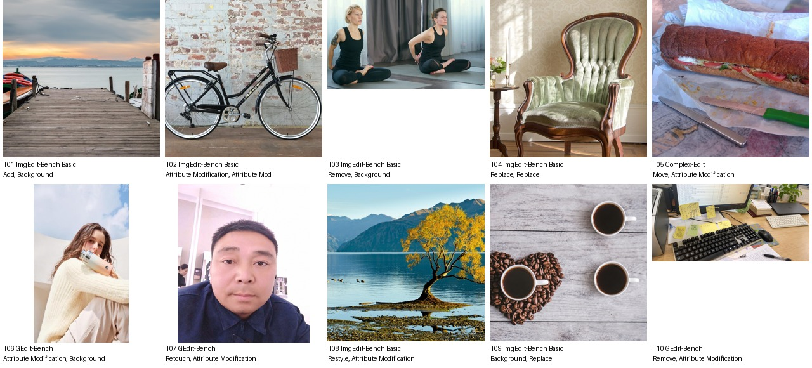

Agricultural conservation planner · Bachelor's degree in Environmental Science · 未提供数值年龄；按职业与教育背景推定为成年人
Khoa spends his workdays visiting farms, checking erosion controls, and helping landowners plan cover crops and water-saving improvements. After hours, he is usually in the garage tuning the audio system in his old Chevy truck or watching live stand-up clips with his wife while their dog begs for scraps. He keeps a close eye on Kansas hail alerts because one bad storm can wreck both fields and freshly painted fenders. On weekends he lifts at a no-frills gym, goes line dancing when friends drag him out, and maintains a surprisingly careful notebook of heirloom melon varieties he wants to grow someday.
Add 1 · Background 4 · Restyle 2 · Attribute Modification 7 · Remove 2 · Replace 3 · Move 1 · Retouch 1
本轮每条2个独立原子操作，允许范围2–3，不按上限凑数；当前命令隐藏结果值与方向。新增动物仅为图中干扰候选，不登记为用户宠物。源图与命令均可查看前后对照，等待本轮人工审核；长期日常历史尚未生成。 所有实体和偏好仍为构建稿，尚无长期历史或编辑结果。
上层v3表达个性化编辑请求，底层列出操作、个性化参数及具体解析。125项global均不绑定题材或具体图片，由请求选择；人物基本信息、非global知识和图片保持不变。历史版本仅存internal；长期日常历史尚未构建。
整组图片与基础人物信息（已清理、统一字段）

{
"source": {
"dataset": "bowen-upenn/PersonaMem-v3",
"revision": "7b00a090b35b7293e6efeeb19494207f32b5a9ee",
"source_persona_id": "20",
"path": "backend/20/profile.json",
"raw_sha256": "9015ec4e3dbc1b7f6a7da2de45309f5d7a5c4b7007d15b4a90c647bb32ba95e7"
},
"basic_profile": {
"name": "Khoa Bui",
"age": null,
"gender": "cisgender male, heterosexual",
"nationality": null,
"languages": [],
"location": {
"city": null,
"region": null,
"country": null,
"description": null
},
"education": {
"degrees": [
"Bachelor's degree in Environmental Science"
],
"fields": [],
"institutions": []
},
"occupation": {
"title": "Agricultural conservation planner",
"organization": null,
"industry": null,
"status": null
},
"relationship_status": null,
"summary": null,
"biography": "Khoa spends his workdays visiting farms, checking erosion controls, and helping landowners plan cover crops and water-saving improvements. After hours, he is usually in the garage tuning the audio system in his old Chevy truck or watching live stand-up clips with his wife while their dog begs for scraps. He keeps a close eye on Kansas hail alerts because one bad storm can wreck both fields and freshly painted fenders. On weekends he lifts at a no-frills gym, goes line dancing when friends drag him out, and maintains a surprisingly careful notebook of heirloom melon varieties he wants to grow someday.",
"hobbies": [],
"personality": {
"traits": [],
"values": [],
"quirks": [],
"big_five": {
"openness": "medium",
"conscientiousness": "high",
"extraversion": "medium",
"agreeableness": "low",
"neuroticism": "low"
}
},
"additional": {
"social_connections": [
{
"friend_id": "friend_1",
"display_name": "Kien Bui",
"relationship_depth": "close",
"shared_interests": [
"truck restoration",
"old Chevy trucks",
"Kansas hail alerts"
]
},
{
"friend_id": "friend_2",
"display_name": "Kyle Brackett",
"relationship_depth": "acquaintance",
"shared_interests": [
"no-frills gym",
"line dancing"
]
},
{
"friend_id": "friend_3",
"display_name": "Kien Barta",
"relationship_depth": "distant",
"shared_interests": [
"cover crops",
"rural Kansas"
]
},
{
"friend_id": "friend_4",
"display_name": "Kasey Bloom",
"relationship_depth": "close",
"shared_interests": [
"stand-up clips",
"truck audio"
]
},
{
"friend_id": "friend_5",
"display_name": "Kurt Blevins",
"relationship_depth": "acquaintance",
"shared_interests": [
"erosion controls",
"farm visits"
]
},
{
"friend_id": "friend_6",
"display_name": "Khai Tran",
"relationship_depth": "close",
"shared_interests": [
"lifting",
"gearhead projects",
"line dancing"
]
},
{
"friend_id": "friend_7",
"display_name": "Kent Boettcher",
"relationship_depth": "acquaintance",
"shared_interests": [
"water-saving improvements",
"local farms"
]
},
{
"friend_id": "friend_8",
"display_name": "Kara Beeson",
"relationship_depth": "distant",
"shared_interests": [
"rural mutuals",
"Kansas hail alerts"
]
},
{
"friend_id": "friend_9",
"display_name": "Kolby Burkholder",
"relationship_depth": "acquaintance",
"shared_interests": [
"ATVs",
"truck paint"
]
},
{
"friend_id": "friend_10",
"display_name": "Kimball Bowers",
"relationship_depth": "distant",
"shared_interests": [
"conservation planning",
"cover crops"
]
}
]
}
},
"adult_eligibility": {
"status": "adult",
"basis": "adult_career_and_education_context",
"inferred": true,
"numeric_age_provided": false
},
"persona_id": "persona_001"
}